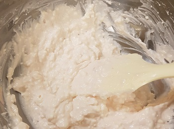

Ming Bakery
Home
Tool
Review
Review
케이크
케이크
마카롱
마카롱
타르트
타르트
밀크레이프
밀크레이프
에그타르트
에그타르트
기타
기타
딸기 프레지에
첫번째 시도
처음으로 도전해 본 케이크였다. 이 케이크는 선물용으로
만들기 위한 연습으로 케이크의 시트인 제누와즈를 먼저
구웠다.
연습용으로 도전한 딸기 프레지에는 처음 만든 것 치고는
잘 만들어서 부모님과 맛있게 나눠먹었다. 이 때는 커스타드
크림과 버터를 섞은 크렘앙글레즈로 만든 베이스라 무너지지
않고 잘 만들 수 있었다.
두번째 시도
두번째로 만든 것은 선물 하기 위해 만들었던 것이었는데
이번엔 좀 더 부드러운 식감을 위해서 커스타드 크림과 생크림을 섞은 크렘무슬린으로 만들었는데 생크림 비율이 너무
많아서 묽게 만들어졌다. 게다가 시간이 촉박해서 오랜시간
동안 굳히지 않고 무스링을 빼다가 크림이 무너져서 사진과
같이 되었다.
선물 하루 전 날 만든 케익이었기 때문에 시간이 없어서 망친 케이크를 어떻게든 옮겨서 상자에 넣었는데 옮기는 과정이
너무 힘들었다. 하지만 망친 거라도 맛있게 먹어줘서 행복했다.
세번째 시도
저번의 실수를 만회하기 위해서 한 번더 딸기 프레지에를
만들었다. 이때는 케이크 시트인 제누와즈도 떨어져서 다시
구웠다. 이번엔 실수를 하지 않기 위해 크렘앙글레즈로 다시
만들었다. 그 결과 잘 굳혀지고 성공했다. 이건 선물을 했기
때문에 먹어 보지 않아서 맛을 모른다.
이번엔 성공한 딸기 프레지에를 이쁘게 상자에 담는 것까지
성공해서 선물을 잘 전달했다.
마카롱
초코 마카롱
1월 24일 겨울방학때 초코마카롱 만들기를 처음으로 도전했다. 처음 한 것 치고는 잘 만들었다 생각했는데 나중에 먹어보니
마카롱 속이 다 안 익은 것 같아서 오븐에 한 번 더 구워보았다.
구운 결과 처음보다 잘 된것 같았고 삐에라고 옆에 삐죽하게
튀어나온 것이 마카롱의 생명인데 나름 잘 나와서 만족했지만 이것도 먹어보니 덜 익은 것 같아서 처음 해봤기 때문에 잘
몰라서 한번 더 오븐에 돌렸다.
세번을 굽고 나니까 반죽 위에가 갈라지기 시작했다. 하지만
아직 안 익은 것도 여전히 존재했다. 익은 것의 대부분은
가장자리에 있던 것이라 실패의 원인을 우리 집 오븐이라고
판정을 내리고 꼬끄 굽기는 여기서 멈추고 다음을 기약했다.
꼬끄를 다 만든 다음 샌드를 해주기 위해서 보통 필링을
만드는데 처음 만든 필링은 재료가 많이 없어서 집에 있는
것으로 만들기 위해 크림치즈 필링을 만들었는데 이게 너무
묽게 만들어져서 원하는 모양대로 나오지 않아서 전체적으로 아쉬웠다.
말차 마카롱
저번에 초코 마카롱을 만들 때 대실패를 경험하고 실패의 원인이 카카오분말일 수도 있겠다는 생각이 들어서 이번엔 말차
가루를 넣은 말차 마카롱을 도전했다. 또 바꾼것은 아몬드 분말이었는데 이거 역시도 마카롱에서 중요한 것이라 바꿔봤는데 성공을 하게 되었다.
말차의 씁쓸함과 잘 어울릴 것 같은 초코 가나슈 필링을 만들어서 샌드해주었는데 가나슈의 농도가 적당해서 마카롱이 전체적으로 성공을 하게 되어서 기뻤다.
초코 마카롱 2차 시도
말차 마카롱의 성공으로 마카롱에 대한 자신감이 붙어서 이번에 초코 마카롱을 만들면 성공할 수 있지 않을까 라는 생각에 베이킹 책을 참고해서 다시 도전해보았다. 그래서 저번보다는 꼬끄가 성공적이었지만 온도가 높았던 탓인지 윗면이 쪼그라 들었다.
저번에 말차 마카롱과는 반대로 꼬끄는 초코 필링은 말차 느낌으로 했는데 말차가나슈를 만들 때 차를 우린것도 함께 넣었는데 맛이 색다르고 괜찮았다.
타르트
딸기 타르트
예전부터 꼭 해보고 싶었던게 베이킹이었고 만약 베이킹을
하게된다면 제일 먼저 해보고 싶었던 것이 딸기 타르트였다.
베이킹을 처음 한 날 1월 4일에 딸기 타르트를 만들었고 생각보다 어려운 난이도였다. 먼저 반죽을 하고 숙성시킨 다음
타르트지만 오븐에 먼저 굽는데 오븐을 잘 몰라서 타르트지를 태워버렸다.
타르트 반죽을 한 번 약하게 익힌 다음 아몬드 필링을 넣어 한번더 익혀줘야 된다 그래서 아까 탔던 부분이 더 까매지게
되었지만 탄 부분말고는 잘 익었다.

이제 타르트부분은 완성하였고 그 위에 올릴 요거트 크림을
만들어주었다. 안에 크림치즈도 넣었는데 크림치즈가 생각보다 잘 안 풀리고 요거트에 안 녹아서 섞는데 고생을 좀 하였다.
만들어 둔 요거트 크림을 올리고 마지막으로 대망의 딸기를
올려줘서 딸기 타르트를 완성시켜주었다. 딸기 타르트를 사
먹게 되면 이렇게 많은 양의 딸기를 먹지 못하는데 만들어
먹어서 좋은 점은 이런 것 같다.
밀크레이프
밀크레이프
오븐을 이용하지 않고 할 수 있는 베이킹이 무엇일까 생각하다가 하게 된 것이 밀크레이프다. 밀크레이프는 현재 빌리엔젤이라는 가게에서 유명해져 한창 유행이 됬던 것인데 오븐을 이용하지 않고 후라이팬으로 한장 한장 구워야 한다. 사진은 직접 손으로 뒤집어가면 구운 것들이다. 손가락 끝이 매우 뜨겁다.
다 구운 크레이프들을 생크림을 휘핑해서 크레이프 사이사이에 생크림을 샌드해줘서 겹치면 크레이프 완성이다. 이때 생크림과 설탕 비율을 잘 못 계산해서 설탕이 많이 안 들어간 건강한 밀크레이프를 완성시켰다.
에그타르트
1차 시도
마카롱을 하면 흰자만 사용해서 노른자만 사용해서 하는 베이킹이 뭐가 있을까 찾아보다가 에그타르트를 발견하고 도전해보았는데 물이 많이 들어가서인지 반죽이 조금 묽게 되었다. 그래서 판에 붙힐 때 자꾸 달라붙어서 힘들었다.
1차 시도 때 타르트지 반죽을 바삭하게 해서 과자같은 느낌이 되었다. 그리고 윗면에 그을음이 맛있게 생겨서 기분이 좋았다.
한 번에 세게 내리쳐서 타르트를 빼내려 했는데 힘이 너무 센 탓인지 타르트 몇개가 부서지게 되어서 마음이 아팠다.
그래도 에그타르트 4개는 살아 남았는데 겉은 바삭바삭 안은 촉촉해서 많은 사람들한테 호평을 얻었다.
2차 시도
호응이 저번에 너무 좋아 또 만들게 되었는데 이번에는 전분을 넣어서 더 안은 쫀득하게 바깥은 쿠키같은 질감보다 페스츄리의 질감이 느껴지게 반죽하였다.
이번에 에그타르트들을 빼낼 때는 버터칠과 힘의 세기 조절 덕분인지 아무것도 부서지지 않고 잘 빼내었다.
3차 시도
제일 마지막에 만들었던 에그타르트인데 3번째 만드니까 요령이 생겨서 반죽의 농도나 필링 안의 전분을 얼마나 넣는지 이런 것을 잘 조절해서 만들었다. 반죽이 남는 것은 위에 구워서 먹기도 하였다.
기타
바닐라 머핀
어려운 베이킹은 많이 해 봤는데 기본적인 베이킹을 안 해본 것 같아서 해봤다. 제일 기본중에 기본인 바닐라 머핀은 안에 바닐라빈을 직접 갈아 넣어 풍미가 매우 좋았다. 원래는 컵케잌처럼 위에 필링을 올릴려 했지만 만든 필링이 너무 묽어 흘러 내려 실패했다.
계란 과자
계란 과자 역시도 노른자만 들어가서 노른자 처리용으로 만들었는데 설탕을 많이 안 넣어서 그런지 담백하고 적당히 달아서 맛있었다. 하지만 우리집 오븐이 작은 관계로 너무 간격이 좁게 반죽을 놔두어 서로 달라붙어서 떼보니 계란과자의 원형 형태가 아닌 조각처럼 되었다.